All 46 species in Poopy, with the flavour text from the in-game Poopdex and the shortest known way to obtain each one. Grades run from Common to Mythic; the grade decides how long the species takes to digest, what it sells for, and which recipes will accept it as an ingredient.
Reading the grades
| Grade | Species | Sell value | Notes |
|---|---|---|---|
| Common | 16 | 15 | Your starting pool. Cheap, fast, and the base of nearly every recipe. |
| Uncommon | 11 | 55 | Mid-tier. Doubles as ingredients for the tier above. |
| Rare | 7 | 220 | Mid-tier. Doubles as ingredients for the tier above. |
| Epic | 4 | 1,200 | Mid-tier. Doubles as ingredients for the tier above. |
| Legendary | 5 | 4,000 | Legendary. All five come from group-4 recipes (poop + poop). |
| Mythic | 3 | 10,000 | Mythic. Recipes are deliberately hidden; you pick one as a one-time reward. |
Species you cannot breed by accident
- Craft-only (9): Dung Beetle Poop, Hippo Dung, Hornet Poop, Sea Lion Poop, Rainbow Poop, Platypus Poop, Unicorn Poop, Dragon Dung, Phoenix Ash. These never appear as wild visitors — a recipe is the only way in.
- Habitat-only (2): Penguin Guano (Beach), Mammoth Dung (Snow). Buy the matching backdrop in the shop and wait for a wild visit.
- Mythic (3): Magma Poop, Abyss Poop, Sprout Poop. You choose one; the others stay locked in that save.
Common 16
Sells for 15 coins each.
Firefly Poop
Its tail glows faintly. The source of the glow gene.
Ladybug Poop + Bug → 45%
Rat Poop
The most common starting point. Found everywhere.
Hedgehog Poop + Bug → 35% (+2 more)
Sparrow Poop
Falls from the sky. They say it means good luck.
Starting species — no recipe needed.
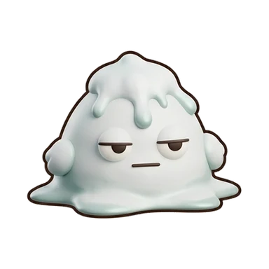
Pigeon Poop
Often found on statues. Utterly unbothered.
Sparrow Poop + Grass → 45% (+1 more)
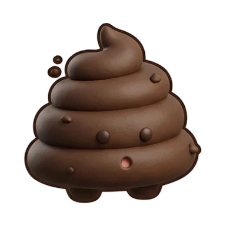
Worm Cast
Eats soil, makes soil. Enriches the field.
Snail Poop + Grass → 50% (+1 more)
Snail Poop
Grows slowly, but the shell is lovely.
Worm Cast + Grass → 45%
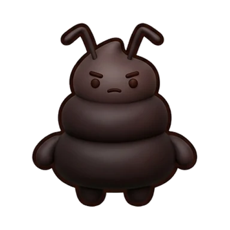
Ant Poop
Tiny but diligent. Always carrying something.
Starting species — no recipe needed.
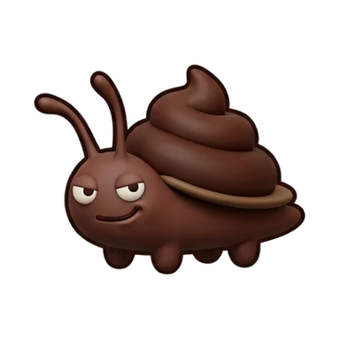
Roach Poop
Loves the dark. Disturbingly sturdy.
Starting species — no recipe needed.
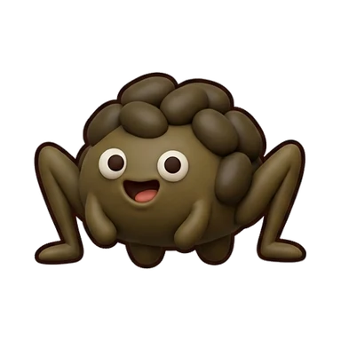
Cricket Poop
Gets loud after sunset.
Ant Poop + Grass → 40% (+1 more)
Hamster Poop
Hides snacks in its cheek pouches.
Rat Poop + Pellets → 45% (+1 more)
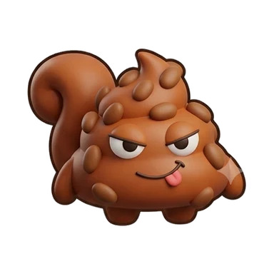
Squirrel Poop
Forgets where it buried things.
Hamster Poop + Grass → 45% (+1 more)
Rabbit Pellet
Round little pellets. Great fertilizer.
Rat Poop + Grass → 45% (+3 more)
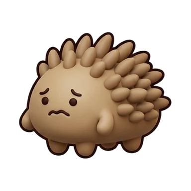
Hedgehog Poop
Timid. Curls up when startled.
Starting species — no recipe needed.
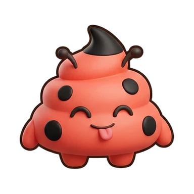
Ladybug Poop
The number of dots is never the same.
Firefly Poop + Grass → 45% (+1 more)
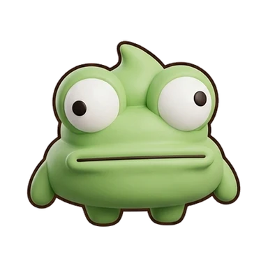
Frog Poop
Eyes bigger than its body. Zero expression.
Cricket Poop + Bug → 40% (+2 more)
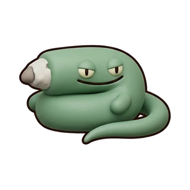
Lizard Poop
White tip is the tell. The tail grows back.
Frog Poop + Bug → 45% (+2 more)
Uncommon 11
Sells for 55 coins each.
Dog Poop
Adores its owner. Ruins your day if stepped on.
Fox Poop + Meat → 35% (+1 more)
Cat Poop
Always buries itself. Extremely aloof.
Dog Poop + Pellets → 40% (+2 more)
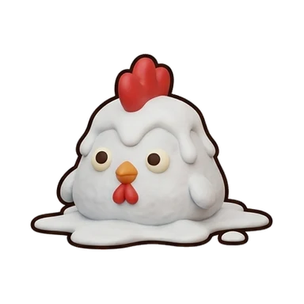
Chicken Poop
Proud of its comb. Crows at dawn.
Sparrow Poop + Bug → 45% (+3 more)
Duck Poop
Found by the water. Floats surprisingly well.
Chicken Poop + Fish → 40% (+1 more)
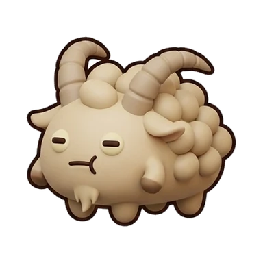
Goat Pellet
Chews anything. Paper included.
Rabbit Pellet + Grass → 30% (+2 more)
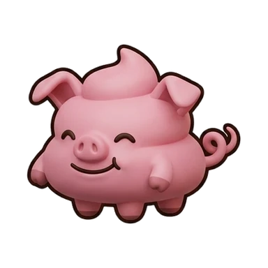
Pig Poop
Looks happy. Actually is happy.
Starting species — no recipe needed.
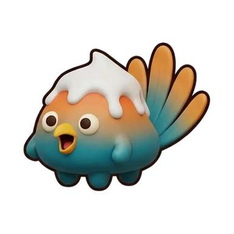
Parrot Poop
Repeats what you say. Wildly colorful.
Peacock Poop + Pellets → 35%
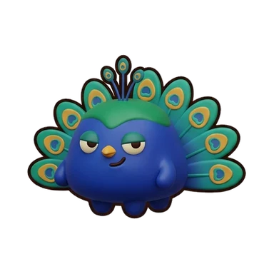
Peacock Poop
Everyone stares when it fans its tail.
Chicken Poop + Pellets → 35% (+4 more)
Raccoon Poop
Still shows traces of the trash it raided.
Fox Poop + Junk Food → 40% (+2 more)
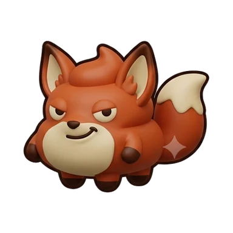
Fox Poop
Clever. If it smiles, it is plotting.
Cat Poop + Fish → 40% (+2 more)
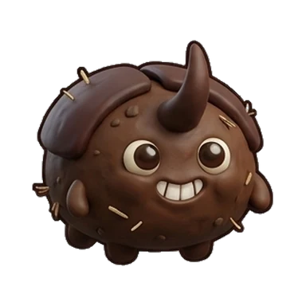
Dung Beetle Poop
The one that rolled dung became dung. Crafting only.
Cow Pat + Cow Pat + Firefly Poop → 100%
Rare 7
Sells for 220 coins each.
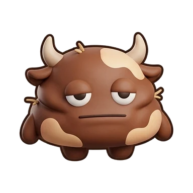
Cow Pat
Mixed with straw. Dries into fuel.
Goat Pellet + Grass → 30% (+2 more)
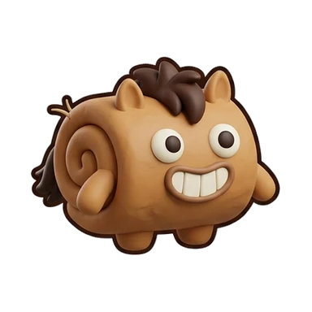
Horse Apple
Still steaming. Mushrooms love it.
Cow Pat + Grass → 35% (+1 more)
Elephant Dung
100kg a day. Can be made into paper.
Horse Apple + Pellets → 25% (+2 more)
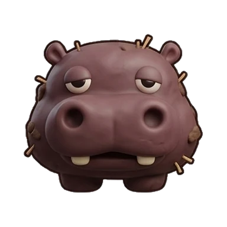
Hippo Dung
Sprayed with its tail. Clouds the river. Crafting only.
Horse Apple + Horse Apple + Pig Poop → 90%
Penguin Guano
Guano. Visible from satellites in Antarctica.
Wild visitor on the Beach backdrop only.
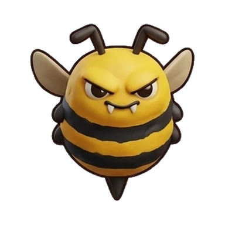
Hornet Poop
Yellow stripes. Do not get close. Crafting only.
Horse Apple + Horse Apple + Ladybug Poop → 90%
Sea Lion Poop
Strong fishy smell, always damp. Crafting only.
Penguin Guano + Penguin Guano + Dog Poop → 90%
Epic 4
Sells for 1,200 coins each.
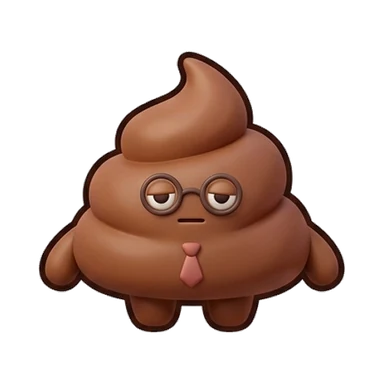
Human Poop
Glasses and a tie. Went to work again today.
Pig Poop + Junk Food → 25% (+1 more)
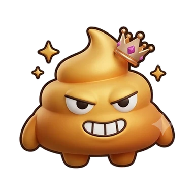
Golden Poop
Dream of it and they say to buy a lottery ticket.
Human Poop + Junk Food → 8% (+2 more)
Rainbow Poop
Many color genes expressed all at once.
Parrot Poop + Parrot Poop + Peacock Poop → 80%
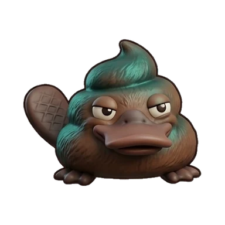
Platypus Poop
Bill and fur in one body. Taxonomists gave up. Crafting only.
Duck Poop + Duck Poop + Raccoon Poop → 80%
Legendary 5
Sells for 4,000 coins each.
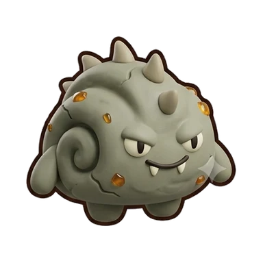
Coprolite
A fossilized dropping. It waited 60 million years.
Lizard Poop + Meat → 1% (+3 more)
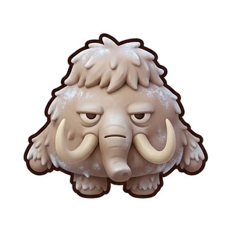
Mammoth Dung
Found frozen in the permafrost.
Wild visitor on the Snow backdrop only.
Unicorn Poop
Touch it for luck. Nobody ever has.
Horse Apple + Horse Apple + Rainbow Poop → 70%
Dragon Dung
Still hot. Do not touch.
Coprolite + Coprolite + Lizard Poop → 70%
Phoenix Ash
Turns to ash, then pulls itself back together. Crafting only.
Sparrow Poop + Sparrow Poop + Golden Poop → 70%
Mythic 3
Sells for 10,000 coins each.
Magma Poop
A quest-only unique. Still bubbling inside.
Mythic — obtained through a one-time choice, not a recipe.
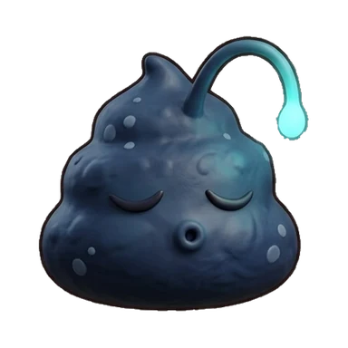
Abyss Poop
A quest-only unique. It survived the deep-sea pressure.
Mythic — obtained through a one-time choice, not a recipe.
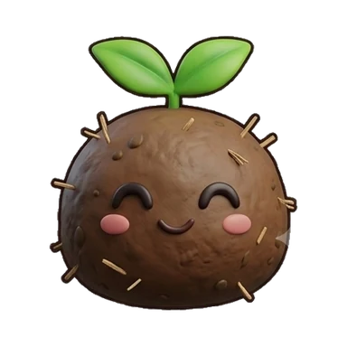
Sprout Poop
A quest-only unique. A sprout grows on its back.
Mythic — obtained through a one-time choice, not a recipe.